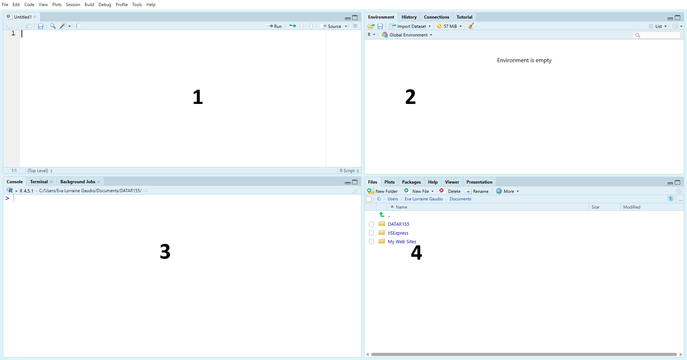

Purpose
This chapter matters because it gives you your first working habits in RStudio: entering commands, storing results as objects, and keeping track of what your session contains.
In Chapter 1, you practice basic R commands, use the assignment operator <-, identify the main RStudio panes, and save your workspace correctly as an .RData file.
This work is worth doing now because later chapters assume you can store values, reuse objects, and manage your environment without getting lost in the interface. These are the first steps toward a reproducible R workflow.
What This Practice Space Checks
- Use the assignment operator
<-to store numeric values in objects with the correct names. - Apply stored objects in a new calculation instead of retyping the numbers each time.
- Identify the four main RStudio panes: Console, Environment, Script Editor (Source), and Files and Help.
- Clear the Environment before starting so the work reflects only the objects created for this chapter.
- Save the workspace correctly as an
.RDatafile for upload.
Practice Space Steps
- Time estimate: 30 minutes
- Do: Tuesday
- Before starting: Complete the Guided Activity and then complete Tasks 1–5 in the chapter Practice Space.
- Open: Chapter_1_📍Navigation.html
- Use: RStudio Desktop, Console, and workspace file (
.RData). - Save as:
chapter1_practice.RData - Complete: all 5 Practice Space tasks: clear the Environment, store
items_sold, storeunit_price, calculatetotal_revenue, identify the RStudio panes, and save your workspace. - Return to: the Practice Space Quiz in Canvas when Canvas is available.
Static Quiz Preview
Important: This page is a static preview of the quiz questions. It does not submit answers and it does not replace the official Canvas quiz when Canvas is available.
Task 3
🎯 Calculate total_revenue by multiplying the stored objects items_sold and unit_price.
# ⚡ Type this in your Console, filling in the blanks
total_revenue <- ________ * ________Answer format: type the object names needed to complete the calculation.
Task 4
Identify the names of the RStudio panes associated with each number in the image below.

Matching options:
- Console
- Environment
- Script Editor (Source)
- Files and Help
Match each number in the image to the correct pane name.
Task 5
In this course, what operator do we use to assign a value to an object in R?
<-:====
Choose the assignment operator used in this course.
File Upload Requirement
- Your practice work is submitted in a separate assignment.
- Required file to submit:
chapter1_practice.RData
Submit the file in: 01.1.04 Navigation Practice Space File Submission RData
Before You Leave This Page
- Complete the Chapter 1 Practice Space tasks in RStudio.
- Check that
items_sold,unit_price, andtotal_revenueexist in your Environment. - Make sure you saved
chapter1_practice.RData. - Use the static quiz preview to check what the Canvas quiz will ask.